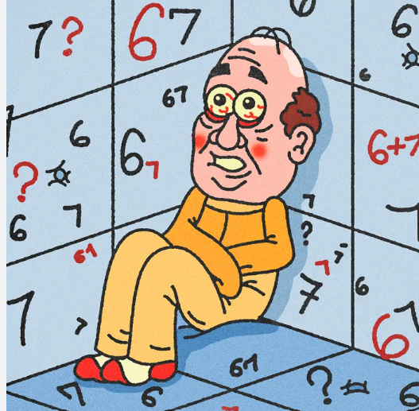

67 is popular because its so funny to little kids and its goated
Link to 67 Article67 got popular because people made songs about it, said it frequently and many kids dragged it out and continued to say it after the joke was over..
The song is called "Doot Doot (67)". Lamelo Ball, an NBA player who plays for the Minnisota Timberwolves, said 67 multiple times and he is 6'7 tall. Then, people made up this kid named "Mason" and he says 67 a lot. He turned into an analog horror and creepypasta character. Which means its supposed to be disturbing and scare you.